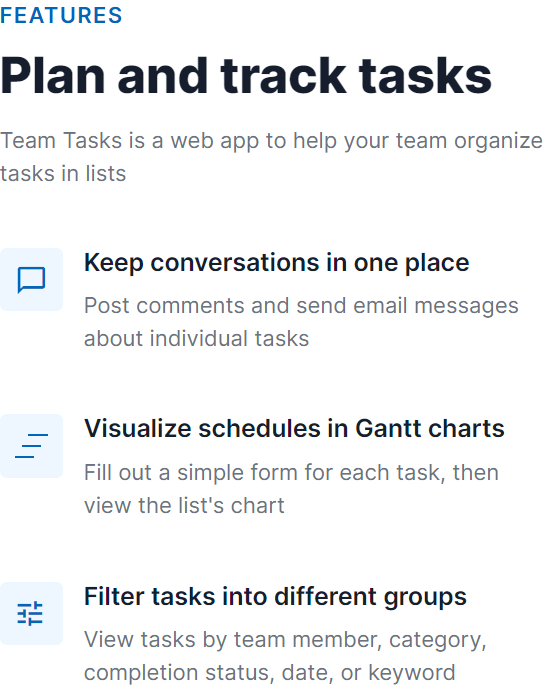

Introduction
I built a task management app in a no-code tool called: Bubble.io
These are examples of the user interface text.
Writing website copy - Feature list on landing page
Headings and sub-headings convey the level of detail.Clear and direct text explains the main features.

Designing a pop-up message - Delete list
The message includes static and dynamic text (example: the list's name).The dynamic text also includes quantities of "tasks", "time-logs", and "comments". The app automatically adds the letter "s" to these words, if plural.To improve clarity, the button's text answers the initial question.
Removing error messages - Modified "SAVE" button
STEP 1
Before a user fills out a form, conventional UX enables the user to click the "SAVE" button. Then the annoying error messages appear on the empty required fields.To improve the user experience, I replaced the "SAVE" button when one or more required fields are empty.The new button is: "HIGHLIGHT REQUIRED FIELDS"
STEP 2
The user clicks the button.Then the borders of the empty required fields change color, and the button disappears.
STEP 3
The user fills in the required fields.Then the borders return to the original color, and the "SAVE" button appears.